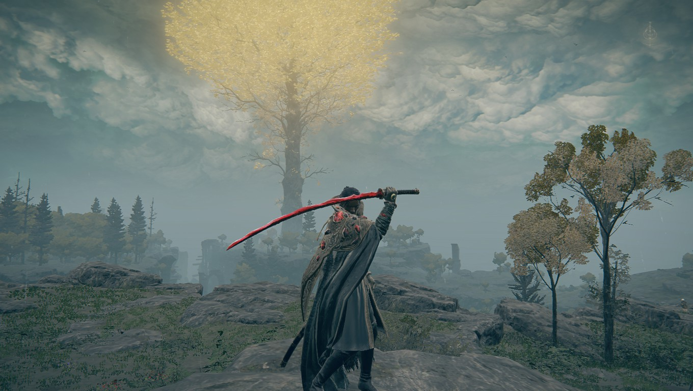

Elden Ring
Overview

Elden Ring is an action fantasy RPG set in the Lands Between, a continent long past its glory days and longing for a new Elden Lord. Released in early 2022 and crowned Game of the Year (GOTY), it was an instant modern classic, praised for its combat, depth, and overall design.
Developed by FromSoftware, the studio behind the Dark Souls Series and the 2019 GOTY winner Sekiro: Shadows Die Twice—both known for their difficulty. Elden Ring continues their legacy of challenging games, but unlike its predecessors, it broke into the mainstream—selling millions and winning over even casual players.
How?
Let’s Split the Screen and break it down.
Mechanics
Elden Ring builds on FromSoftware’s signature mechanics with refined stamina-based combat, weapon scaling, and diverse build customization. The addition of horseback traversal, Spirit Ash summons, and guard counters enriches the sandbox without sacrificing the series' depth. Every tool feels purposeful and layered with risk-reward decisions.
Challenge
Combat is tense, precise, and deeply rewarding. From brutal bosses to roaming elites, every encounter tests reflexes, planning, and mastery. In the classic Souls style, mastery is more important than twitch reactions. Diverging from that style though, Elden Ring offers much more ways to curb the game’s difficulty compared to its predecessors. This balance of difficulty and ease has helped it step into the greater public, helping FromSoftware step into the mainstream.
Level Design
Elden Ring’s world design is both massive and meticulous. Legacy dungeons are dense, interconnected, and layered, reminiscent of classic Souls layouts. The open world offers freedom without losing direction, thanks to organic landmarks and environmental storytelling that naturally pull you toward discovery. That said, other dungeons such as Catacombs can feel repetitive due to their theming.
User Interface
The game has a more functional, minimalist style, though it is occasionally clunky. Inventory management can feel overwhelming, and quest tracking is non-existent—by design. This encourages exploration and note-taking, but may frustrate players used to modern quality-of-life features. Still, the clean HUD keeps immersion strong.
Narrative Design
There is no “main quest” story. Or rather, there is, but it is bland and there might as well be none. Instead, the game’s storytelling calls back to FromSoftware’s other games, being more about piecing together a broken past. The story is cryptic yet thematically rich, relying on item descriptions, NPC dialogue, and environmental clues. Instead of a traditional narrative, Elden Ring invites interpretation. George R.R. Martin’s influence helps shape a coherent mythos, but the storytelling stays true to FromSoftware’s enigmatic style.
Audio
The soundtrack swells with haunting chorales, epic boss themes, and ambient tension. Each major area has a distinct musical identity. Sound design excels, with intimidating enemy roars and crisp clang of swords. Audio cues subtly guide player behavior and elevate emotional moments during exploration and combat.
Game Feel
Controls are responsive and weighty, with a deliberate feel that rewards mastery. Animations convey impact and danger, while haptics and audio feedback reinforce player actions. Jumping and horseback traversal add new dimensions without sacrificing the classic Soulslike “feel” that fans expect, though horseback combat feels clunky more often than not.